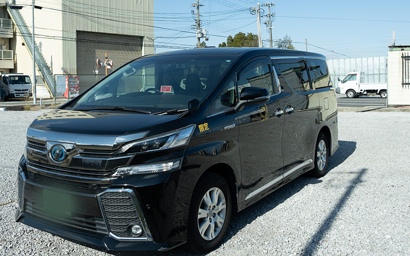
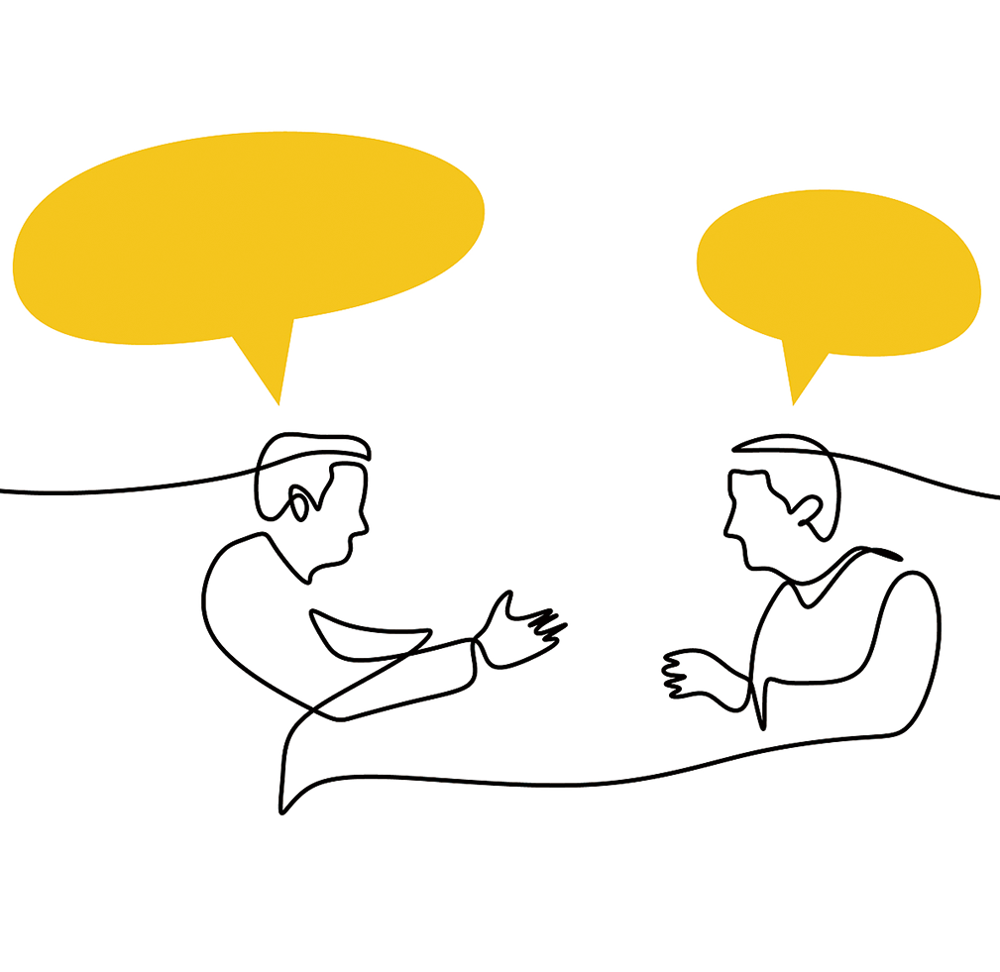
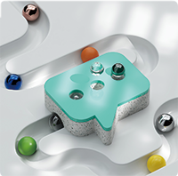

每年承接1000单以上
选择 ASOBI 的理由
事先确定价格
安心透明
价格公道，力求实惠！
临时变更OK!
灵活的VIP接待
轻松预约使用
LINE・微信接待
欢迎随时咨询
快捷联系
精通英语・中文
多国籍客户接待
放心交给我们
SERVICE
可提供的服务


Vehicle Lineup
车辆阵容


TOYOTA VELLFIRE
丰田・威尔法
霸气的前脸搭配宽敞的独立航空座椅，是一款高级MPV。从机场接送到观光、商务出行，都能在安静沉稳的车内轻松享受。
最多7名 / 推荐：4〜5名 + 行李箱。
查看详情
丰田・威尔法
最多7名 / 推荐：4〜5名 + 行李箱。


TOYOTA ALPHARD
丰田・埃尔法
高品质的内饰与安静平稳的乘坐感，是接送重要宾客的首选。家庭旅行或长途出行，也能在宽敞的空间里舒适度过。
最多7名 / 推荐：4〜5名 + 行李箱。
查看详情
丰田・埃尔法
最多7名 / 推荐：4〜5名 + 行李箱。


丰田・海狮
行李空间宽敞！行李多的旅程也安心 / 最多9名


丰田・格瑞纳
献给追求极致乘坐舒适感的您 / 推荐：2〜5名
The Process
使用流程

咨询联系
Contact
可通过各种社交平台・邮件
向我们咨询
洽谈・签约
Planning & Contract
根据您的目的・人数・日程
为您提案方案。

调整・沟通
Adjustment
如有行程变更，
请先
与我们联系。
服务开始
Service Start
按照方案，
开始为您提供服务。
Q&A
常见问题
最大的区别在于“完全预约制”和“接待的品质”。高级轿车完全不沿街揽客，专属司机只为您提供专享的空间。
原则上为事前预约制，但视空车情况，也有可能当天安排。
支持事前转账、信用卡支付。法人签约的情况下，也可使用账单付款（后付）。可面议，请先与我们联系。
可以。埃尔法、海狮等车型可根据人数和用途指定。我们也备有婴儿座椅・轮椅，欢迎随时使用。
以大阪市出发・到达为中心，覆盖关西全域，可广泛用于机场接送、观光等。
使用日的2天前为止免费取消。前一天・当天取消将收取规定的取消费用。
对于临时的行程变更或追加的委托，我们也会尽可能灵活应对。请先与我们联系。

Contact Us
联系我们